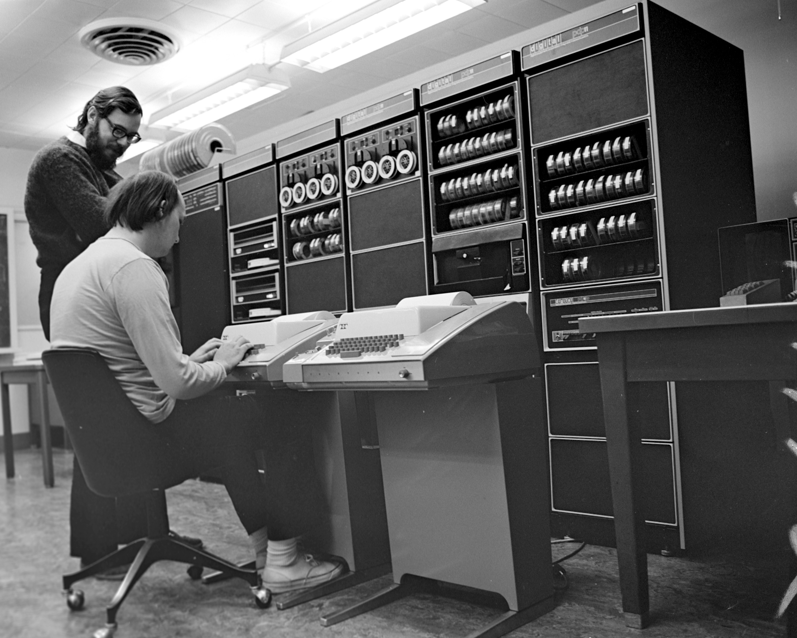

The C Programming Language
In 1970, two researchers at Bell Labs in New Jersey (Ken Thompson and Dennis Ritchie) developed a portable operating system for the new wave of mini-computers just coming on the market. They named their operating system Unix (or UNIX if you like).

Unix was originally written in assembly language. Later was converted, (or ported), to a high-level language named B. Then, to simplify the development of Unix, Dennis Ritchie modified the B language and created the programming language named C.
Both Unix and C have had enormous impacts on the field of computing. Many of today's most important language are based on C, including C++, Java and C#, which still use much of the original syntax designed by Ritchie.
 This course content is offered under a
CC
Attribution Non-Commercial license. Content in this course
can be considered under this license unless otherwise noted.
This course content is offered under a
CC
Attribution Non-Commercial license. Content in this course
can be considered under this license unless otherwise noted.